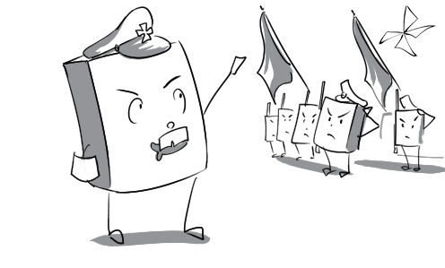
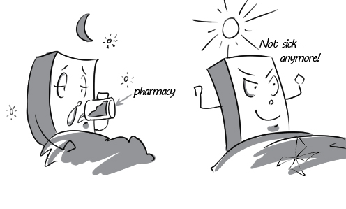
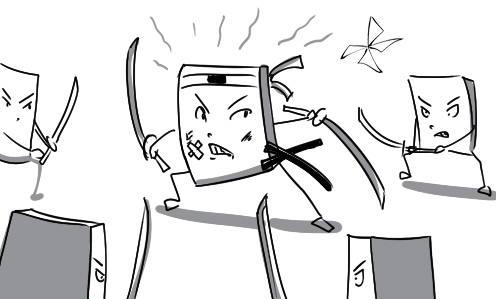
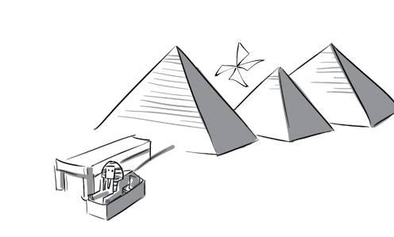
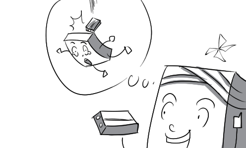
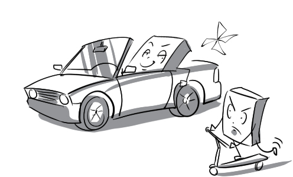
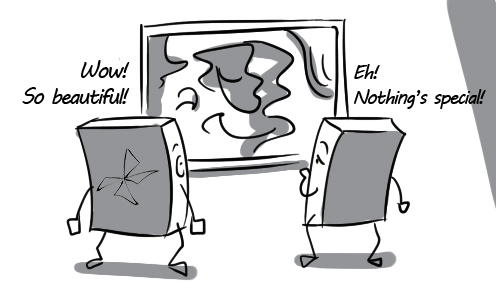

abundant: The fisher is so happy because the river is abundant in salmon and trout.
accumulate: Nam has accumulated a lot of money to buy a new motorcycle.
agent: The support of Jack's parents is the most important agent of his progress.
aggression: The aggression of the fighters makes the battle more exciting.
alarming: The tornado is moving to the capital at an alarming rate.
amateur: The amateur goalkeeper couldn't catch any ball.
ambitious: Harry set an ambitious goal to become a millionaire before he turns 40.
apparent: The boys still denies his guilt in spite of the apparent evidence.
application: Albert Einstein's theory of relativity has application to various fields, especially aerospace.
bitter: The manager gave Tom a bitter speech because his job performance was very poor.
blend: To make a cup of chocolate milk, you have to blend milk with 3 teaspoons of cocoa powder.
boost: Boosting the regional peace and stability is one of the biggest goals of ASEAN.

brilliant: Martin Dempsey is one of the most brilliant generals of the United States of America.

bundle: Mr. Taylor chops and bundles the logs up.
campaign: The government launches a national campaign to publicize H5N1 knowledge.
capacity: What is the capacity of this soda bottle? 2 liters.
cell: The campus has different cells for different faculties.
charm: Caroline is so beautiful that no boys in this school can resist her charm.
combat: The US troops have been combatting against the Taliban for 3 days.
complex: The student can't learn complex formulas; that's why he failed the exam.
compound: Some chemical compounds can explode on contact with water.
consequence: Simon has to sell all of his assets as a consequence of his gambling addiction.

core: Don't forget to put the apple core in the trash can after you finish it.
countless: When King Leonidas made a signal, the Spartans shot countless arrows at their enemy.
crucial: The general says, The castle is the most crucial place of the battle.
deem: Tom deems his card to be the most powerful
dependant: Tommy is a dependant of his parents.
dusk: The newlywed couple are sitting on the beach and watching dusk fall gradually.
efficiency: This painkiller's efficiency amazes me; I just took it 15 minutes ago and now I don't feel pain anymore.

embrace: After 20 years of living apart, the two brothers embraced, holding each other tightly.
enable: The big sale on the television enables Henry to buy.
enlarge: We use magnifiers to enlarge objects too small to see with the naked eye.
essentially: Mr. Snape is essentially a nice man in spite of his fierce appearance.
eternal: God is commonly portrayed as being eternal.
far-reaching: Having the strongest economy, US has far-reaching decisions.
fearlessness: All the audience is amazed by the fearlessness of the samurai played by Tom Cruise.

feature: The mole on Matt Damon's face has become a lovely feature in his fans' hearts.
feedback: The negative feedback from customers really disappointed us.
finite: With a finite amount of money, he can't buy a hamburger.
flower: In Vietnam, lotuses can flower as late as June.

fuel: Can you show me how to add fuel to my Zippo lighter?
gaze: Jimmy is gazing at the toy airplane without blinking.

gender: There are a lot of physical and emotional differences between the genders.
gradual: In order to prevent gradual weight gain, we should do exercise at least 3 times a week.
greatly: Andy was greatly happy when he knew that he won the lottery.
groundbreaking: The cancer specialists has made a groundbreaking discovery.
head: All students are heading for the hall to join the ceremony.
hue: This scale shows blue hues in a range of brightness.
ideal: Every mother wants to find an ideal husband for their daughter.
illumination: In that flash of illumination, David realized he had rebuked his son wrongly.
illusion: John cannot escape the illusion of a happy marriage with Lisa although she refused his proposal.

imply: What do you want to imply when you say that he eats like a pig?
impose: The leader imposed his tight schedule on all team member, now they don't even have time to breathe.
increasingly: Tom has worked very hard and his savings grow increasingly large.
inconsistent: Their instructions are so inconsistent that I don't even know which way to go now.
inevitable: A mess in the kitchen is inevitable if you let your children cook without your supervision.

internal: In spite of his internal jealous feelings, Tom still congratulated Lisa on her promotion.
jaw-dropping: The audience were totally amazed by his jaw-dropping performance.
keen: The children are keen to try the new game.
lightning: Lightning kills around 70 people and injures more than 500 every year.
link: The link between Tim and Tina is very strong. They always share everything with each other.
magnification: Under high magnification, the lizard looks like a fierce dinosaur.
majestic: The Pyramid of Giza is a majestic wonder that everyone wants to visit once in a lifetime.

maturity: Some mothers are afraid of losing their children when they reach maturity.
merely: Anne merely exercises regularly to keep healthy. She has no special tricks.
millennium: Billions of people around the world welcome the New Millennium with many spectacular celebrations.
moderate: Remember to moderate your appetite if you want to lose some weight.
mystical: The archeologist felt a shiver down his spine when he entered the mystical pyramid of Giza.
networking: The new manager has to improve his networking with all employees if he wants to gain their trust.
obstacle: Tom had to overcome many obstacles to achieve his goals.
ongoing: The meeting is still ongoing because no solution has yet been reached.
opt: Consumers will opt for low-priced products regardless of their low quality.
outdated: Jim is using an outdated method to make a fire.
passionate: Tanaka has a passionate interest in samurai swordsmanship.

peak: Conquering the highest peaks of the Himalayas is many climbers' biggest dream.
possession: Although Zimbabwe is a poor country, its president still has a large number of valuable possessions.
precise: The archer tries his best to take precise aim at the target.
principal: CEO ia a principal position of a company.
principle: My parents have me follow many strict principles such as no eating in the bedroom, no chatting after 10...
prosperity: Thanks to his rich parents, Jason can live in prosperity without having a job.
pupil: Any pupils coming to class late has to serve a 2-hour detention.
reality: In spite of his ambition and desire, the young artist has to face miserable reality in this expensive city.
recall: The patient recalls being hit by a brick.

remarkable: There is a remarkable gap between the rich and the poor in our country.

scribble: The student scribbled notes down in his notebook.
selective: This five-star restaurant has a very selective customer target.
self-esteem: Students can improve their self-esteem by frequently participating in class discussions.
sharpen: The Indian man is sharpening his spear tip to prepare for the next hunting.
slightly: To be polite, Daisy said to Tom that he was slightly ugly.
soil: A healthy flower garden requires plenty of sunshine, moisture, and the properly blended soil.
soothe: Tom says sweet things to soothe his angry friend.
surrender: The bank robber drops his gun and surrenders to the police.
tendency: There is a tendency among students to use Apple's electronic products.
trigger: The naughty boy tries to trigger a fight between his two friends by making up a story.
upward: There will be an upward movement in gold prices in the next 3 months.
varied: Female bodies can take on varied shapes such as pear, hourglass…
vast: The little boy is so proud of the vast field of his hometown.
viewpoint: It's no use arguing with someone whose viewpoint is totally different from yours.

vivid: The witness gave vivid description of the suspect to the police.
windmill: Windmills are one of the most famous icons of the Netherlands.